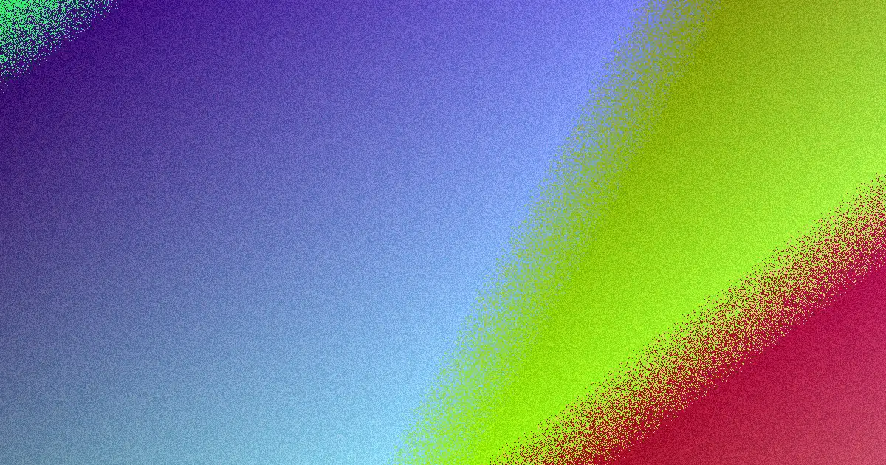

For an Adelaide small business website, the source page says a simple brochure-style build usually starts in the low thousands, most small business projects take around 3 to 8 weeks, and typical packages include planning, design, build, basic on-page SEO setup, mobile optimisation and launch support. The key comparison is not only price. Check scope, platform, content responsibility, site ownership, search foundations and what happens after launch.
For Adelaide businesses comparing website design adelaide options, the practical decision is how well each proposal connects design, mobile performance, search structure, content ownership and enquiry goals.
Website Design Adelaide Explained
Web Design Adelaide describes a useful starting point for local projects: decide whether the job is a first website, a refresh, an online store, a landing page, or a redesign that protects existing rankings. That distinction matters because each path changes the platform, content workload, conversion layout and launch checklist.
A good brief should say what the site must do, not just how it should look. For a service business, the goal may be enquiries from mobile visitors. For a retailer, the stronger concern may be product pages, checkout trust and store management. For a campaign, a landing page may need fewer sections but sharper calls to action.
- List the pages or templates the quote must include.
- State who supplies copy, photography, product data and brand assets.
- Ask whether basic on-page SEO setup and mobile optimisation are included.
- Confirm whether training, maintenance, backups and updates are included or separate.
Choosing Between Custom, WordPress And Ecommerce
The source page separates custom design, small business sites, WordPress builds, ecommerce design, redesigns, landing pages, SEO-friendly builds and care plans. Those categories are useful because they point to different buyer decisions. A custom site suits a business that needs a more tailored structure. WordPress suits teams that want to update pages without keeping a developer on call. Shopify or WooCommerce suits stores where speed, trust and conversion affect sales.
The better question is whether the platform matches the way the business will work after launch. A cafe, consultant, clinic or trade business may value easy content edits and enquiry flow. An online store needs product management, checkout confidence and fast load times. A redesign needs extra care because the existing site may already have search visibility that should not be thrown away during launch.
Cost, Timing And Scope Signals
The published guidance says a simple brochure-style website for a small business usually starts in the low thousands, while custom, ecommerce or booking-enabled sites cost more. It also says most small business websites take around 3 to 8 weeks from brief to launch, depending on scope and how quickly content is supplied. Those figures are enough to frame expectations without assuming every project is the same.
Quotes become easier to compare when they are itemised. Look for planning, design, build, basic on-page SEO setup, mobile optimisation and go-live support. Ask whether stock imagery, content structure or a short training session is included. Hosting, domain renewal, ongoing maintenance and marketing should be treated as separate continuing costs unless the proposal clearly says otherwise.
For a second perspective on the same local topic, this related web design Adelaide guide can help compare terminology before speaking with providers.
Search And Performance Foundations
The Adelaide provider says good on-page SEO, clean structure and strong Core Web Vitals should be built in from the start. In practical terms, a buyer can ask how page titles, headings, internal links, image handling and mobile layouts will be planned before development begins. These are not decorative details. They affect whether visitors can use the site comfortably and whether search engines can understand the pages.
The World Wide Web Consortium is a relevant authority for web standards, while the Australian Competition and Consumer Commission is relevant to fair trading and consumer-facing claims. A business website should therefore be easy to use, technically coherent and careful with public claims. If a designer proposes testimonials, guarantees, offers or comparison statements, ask how those claims will be kept accurate and supported.
Who This Applies To
This guide is for Adelaide SMEs, sole traders, service firms and retailers who are preparing to brief a designer, compare quotes or refresh an ageing site. It is especially relevant when the business wants a responsive website that works on phones, can be indexed properly, and turns visitors into enquiries or purchases.
It also applies to owners who want control after launch. The source page says the finished website and its content are yours once the build is paid in full, while custom code may sometimes be licensed rather than owned outright. That is a contract point worth checking before work starts, because future moves, redesigns and maintenance depend on what you are actually allowed to take with you.
- Define the goal. Write down whether the site must generate enquiries, sell products, support a campaign or replace an ageing build.
- Map the scope. List pages, features, content duties, imagery, platform needs and launch support before asking for a quote.
- Check ownership. Confirm what you own after final payment and whether any custom code is licensed.
- Plan aftercare. Ask what maintenance, backups, updates, security support and marketing cost after launch.
| Project type | Best fit | Questions to ask |
|---|---|---|
| Small business website | A brochure-style site focused on enquiries and clear service information. | What pages, mobile optimisation and basic on-page SEO setup are included? |
| WordPress build | A business that wants to update content without a developer on call. | Will training be included, and who manages updates after launch? |
| Ecommerce build | A store using Shopify or WooCommerce with product and checkout needs. | How will speed, trust signals and product management be handled? |
| Redesign | An ageing or underperforming site that may already have rankings. | How will existing pages, redirects and search visibility be protected? |
Common questions
How much should an Adelaide business expect to budget? The source page says a simple brochure-style small business website usually starts in the low thousands. Custom, ecommerce and booking-enabled builds cost more because they involve broader scope.
How long does a small business website take? The published guidance says most small business websites take around 3 to 8 weeks from brief to launch. Timing depends on scope and how quickly content is supplied.
What should be included in a package? A typical package includes planning, design, build, basic on-page SEO setup, mobile optimisation and launch on the domain. Some builds also include stock imagery, content structure and a short training session.
Will the business own the finished site? The source page says businesses usually own the content, branding and finished website once paid in full. It also notes that custom code is sometimes licensed rather than owned, so the agreement should be checked.
This guide covers practical buying checks for Adelaide website design projects, including scope, platform fit, timing, ownership, search foundations and aftercare.